Хитрости работы в MapInfo
Автор: Виктор Кулыба
Перевод и адаптация: Ciril V. Golubev © 2009
В тексте использованы материалы из «Методических указаний к выполнению лабораторных работ курса «Основы геоинформационных систем и технологий» для студентов специальностей 7.070904 и 8.070904 «Землеустройство и кадастр» и 7.070908 «Геоинформационные системы и технологии» стационарной и заочной форм обучения», Составитель: Р. М. Янчук, Ровно, УГУВХП.
- Общие сведения о ГИС MapInfo
- Создание и редактирование линейных элементов
- Работа с точечными и площадных знаками
1.1 Общие сведения ГИС MapInfo
1.1.1 Назначение и функциональные возможности ГИС MapInfo
MapInfo Professional – это геоинформационная система, позволяющая создавать и анализировать карты стран, территорий, районов, городов и вообще всего, что может рассматриваться как карта или план. Созданная электронная карта может быть отображена различными способами, в том числе в виде высококачественной картографической продукции. Кроме того, MapInfo позволяет решать сложные задачи географического анализа на основе реализации запросов и создания различных тематических карт, осуществлять связь с обособленными базами данных, экспортировать географические объекты в другие программные продукты и многое другое.
В MapInfo вся информация (и текстовая и графическая) хранится в таблицах (Tables). Каждая таблица – это группа файлов, которые задают вид карты или файла данных. Обычно при работе с MapInfo используется большое число таблиц и окон. Открытие таблиц и окон занимает определенное время. В MapInfo все используемые таблицы и окна можно объединить в Рабочий Набор. Рабочий набор – это список всех таблиц и окон, которые используются в данный момент, хранящийся в файле с расширением WOR.
В нем содержится информация обо всех открытых окнах, их размерах и положении на экране, обо всех используемых шрифтах, символах, линиях и штриховках.
Просмотр данных осуществляется с помощью трех окон:
- окно Карты – представляет информацию в виде обычной карты, позволяющей анализировать географические зависимости данных. Окно Карты может содержать информацию сразу из нескольких таблиц, при этом каждая таблица представляется отдельным слоем карты;
- окно Списка – представляет информацию в виде электронной таблицы, списка записей, состоящей из строк и столбцов;
- окно Графика – представляет информацию в виде графиков и диаграмм, что позволяет анализировать числовые зависимости между данными.
Технология синхронного представления данных позволяет просматривать таблицу одновременно в нескольких окнах Карт, Списков и Графиков.
Основные операции могут быть выполнены с помощью соответствующих пунктов меню или кнопок на панелях функций.
Основные функции главного меню программы представлены на рисунке:
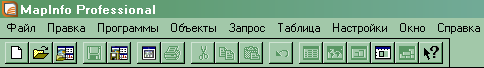Ниже приведены назначение основных кнопок специальных панелей программы «Пенал» и «Операции».
1.2.2 Панель функций «Операции»
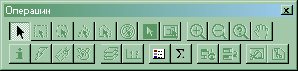Увеличивающая лупа служит для увеличения изображения. Есть два способа применения этой функции:
- курсор размещается в рабочем поле окна, нажатие левой кнопки мыши увеличивает изображение в окне в два раза. Процедуру можно повторить несколько раз до достижения соответствующего вида.
- лупой рисуется прямоугольная область, для чего указатель помещается в воображаемый верхний левый угол прямоугольника и при нажатой клавише передвигается мышка. За указателем будет растягиваться пунктирный прямоугольник, когда он примет необходимые размеры необходимо отпустить клавишу. Область, ограниченная пунктирной рамкой, будет увеличена. MapInfo увеличит размер изображения настолько, чтобы выбранная область заняла все окно Карты.
Уменьшающая лупа
 служит для уменьшения изображения.
служит для уменьшения изображения.
Кнопка 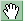 используется для перемещения изображения в окне Карты или Отчета.
Кнопка 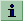 включает функцию информации. Функция используется для вызова вспомогательного окна «Информация» и отражения в нем табличных данных, относящихся к выбранному функцией объекту. На экране также отображаются все объекты, которым может принадлежать точка, на которую указали функцией в окне Карты. Доступны табличные данные для каждого объекта.
Кнопка 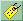 включает функцию подпись. Функция используется для нанесения подписи выбранного объекта на Карту, используя поля из соответствующей базы данных. Кнопка доступна, если окно Карты активно, и хотя бы один слой доступен.
Кнопка 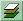 открывает диалог «Управление слоями», позволяющий управлять режимами отображения и работать со слоями в окне Карты. Кнопка доступна, если активно окно Карты.
Кнопка 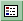 выводит на экран вспомогательное окно «Легенда» для показа условных обозначений, используемых в окнах Графика и Карты.
Кнопка 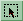 включает функцию выбор-В-рамке. Функция используется для выбора объектов в созданном этой функцией прямоугольнике.
Кнопка 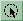 включает функцию выбор-В-окружности. Функция используется для выбора объектов в кругу, очерченном этой функцией.
Кнопка 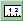 включает функцию линейка и открывает специальное окно «Линейка». Функция используется для определения расстояния на карте между двумя точками.
Кнопка включает функцию указатель. Функция используется для выбора одного или более объектов, одного или более записей. Вы можете использовать эту функцию для операций правки в окнах Карты, Отчета или Списка.
Кнопка 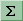 открывает функцию статистика, которая вычисляет и показывает суммы и средние значения в числовых полях выбранных записей. Также в этом окне показывается число выбранных записей (объектов). При изменении выбранного значения показатели автоматически пересчитываются.
1.2.3 Основные кнопки панели «Пенал»
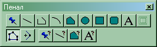Кнопка 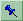 включает функцию символ, используемую для создания символа, которым отображается точечный объект на карте.
Кнопка 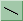 включает функцию линия, которая используется для создания прямых линий в окнах Карт и Отчетов.
Кнопка 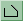 включает функцию полилиний, которая используется для создания ломаных линий в окнах Карт и Отчетов.
Кнопка 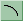 включает функцию дуга, которая используется для создания объектов типа «дуга», представляющих собой четверть эллипса. После создания объекта Вы можете изменить форму дуги.
Кнопка 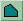 включает функцию полигон, которая используется для создания многоугольников в окнах Карты и Отчета, последовательно задавая его стороны.
Кнопка 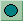 включает функцию эллипс, которая используется для создания эллипсов и окружностей.
Кнопка 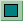 включает функцию прямоугольник, которая используется для создания прямоугольников.
Кнопка включает функцию текст, которая используется для создания текстовых объектов в окнах Карты и Отчета.
Кнопка 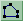 включает режим форма, позволяющий изменять форму полигонов, полилиний, прямых линий путем перемещения, добавления и удаления узлов и сегментов линий. Вы также можете копировать и переносить узлы для создания новых линий и ломаных. Кнопка доступна, если выполняется одно из следующих условий: активно окно Карты и активен слой, на котором находится редактируемый объект или же активным является окно Отчета.
Кнопка 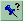 открывает диалог «Символ», предназначенный для изменения стиля оформления точечных объектов. Вы можете изменить тип символа, его размер и цвет. Диалог используется как для задания текущего стиля оформления точечных объектов и текста в Списках, так и для изменения стиля выбранных объектов.
Кнопка 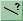 открывает диалог «Линии», предназначенный для изменения стиля оформления линейных объектов. Можно задавать текущий стиль оформления областей и менять стиль выбранных объектов.
Кнопка 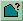 открывает диалог «Стиль области», предназначенный для изменения стиля оформления площадных объектов, таких как область, прямоугольник, эллипс и скругленный прямоугольник. Вы можете изменить тип линии контура, ее цвет и толщину, а также цвет и тип штриховки. Диалог используется как для задания текущего стиля оформления областей, так и для изменения стиля выбранных объектов.
Кнопка 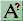 открывает диалог «Стиль текста», предназначенный для изменения стиля оформления текстов. Вы можете изменить шрифт, его написания, размер и цвет. Диалог используется как для задания текущего стиля оформления текстовых объектов, так и для изменения стиля выбранных объектов.
1.2 Создание и редактирование линейных элементов
Линейные элементы в MapInfo создаются с помощью инструментов «линия» и «полилиния», которые описаны выше. Перед вычерчиванием линии нужно задать ее стиль:
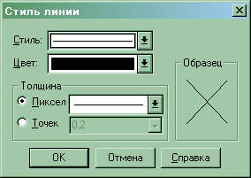В диалоговом окне «Стиль линии» доступны следующие элементы:
- Стиль – определяет форму линейного знака
- Цвет
- Ширина – может быть задана в пикселях или точках, 1 px – 0.08467 мм, 1 pt – 0.35273 мм.
Всего по умолчанию доступно 118 стилей линий, которые можно редактировать.
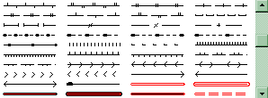Описание всех характеристик линий содержится в файле mapinfow.pen, который можно просмотреть, используя утилиту Line Style Editor. Эта же утилита позволяет редактировать линейные знаки.
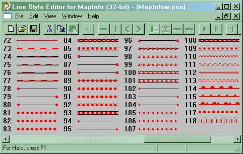Создадим новый условный линейный знак – ограждение из металлической сетки:
- В пункте главного меню выбираем Edit / New Line Style – Появляется новое пустое окно;
- Добавляем новый слой – Edit / New Layer;
- Выбираем инструмент Draw To End -- автоматически формируется линия до конца знака; 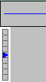
- Добавляем еще один слой, в котором будут расположены другие элементы знака;
- Задаем длину слоя – линия должна начинаться и заканчиваться одним элементом: 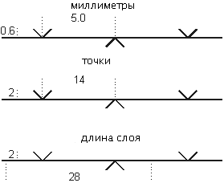
- Вычеркиваем вертикальные «галки», начиная с позиции 7 и 21 соответственно – используем для этого инструменты Angletick -- автоматически формируется линия до конца знака; 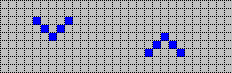
-
Сохраняем знак, запускаем MapInfo и вычеркиваем линию только что созданного типа:

1.3 Работа с точечными и площадных знаками
Площадные условные знаки в MapInfo можно создавать несколькими способами:
- с помощью стандартных заливок;
- вычеркивая знаки методами MapInfo;
- используя утилиту MIFILL.
Черчение методами MapInfo включает в себя оцифровку границ угодья и создание условных знаков (заливок) с помощью полигонов и полилиний.
Для примера создадим сенокос для плана масштаба 1:2000. Размер условного знака – 0, 8 × 1,2 мм, расстояние между знаками 5 × 5 мм в шахматном порядке:
- Создадим новый слой для границ угодья – пункт главного меню Файл / Новая таблица: 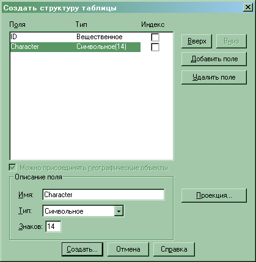
- Зададим проекцию – план-схема (метры): 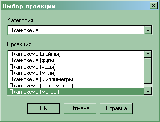
- Обязательно задаем границы для слоя – вне этих пределов вычерчивание будет невозможным, поэтому они должны полностью перекрывать план: 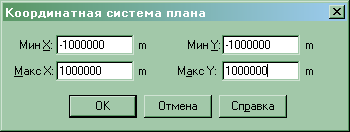
- Вычертим полигон, в рамках которого в дальнейшем создадим знаки сенокоса, предварительно задав стиль: 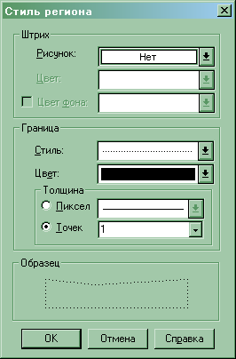
- В дальнейшем создаем еще один слой для условных знаков и начинаем их вычерчивание – в масштабе плана знак имеет размеры 1,6 x 2,0 м, расстояние 10 x 10м, для оптимизации работы используем окно MapBasic – Настройки / Показать окно MapBasic.
- Чертим линию длиной 2,4 м – для контроля в свойствах линии проверяем: 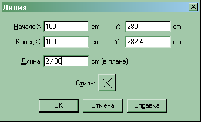
- Смещаем копию линии на 1,6 м вправо – Объекты / Смещение: 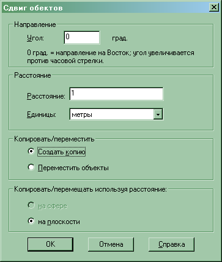
-
В результате предыдущего действия в окне MapBasic появится запись:
objects Offset into table Zaluvka angle 0.000000 distance 1.600000 units "m" type Cartesian Data Field1 = Field1
- Объединяем две линии в один объект – Объекты / Объединить.
-
Смещаем созданный объект вправо на 10 м – для этого выделяем его и меняем в окне MapBasic запись на следующую и нажимаем Enter, пока условные знаки по длине не выйдут за пределы участка:
objects Offset into table Zaluvka angle 0.000000 distance 10. 0 00000 units "m" type Cartesian Data Field1 = Field1
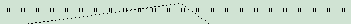 -
Продолжаем смещение к нижней границе участка – выделяем все знаки сенокосов и вводим в окне MapBasic следующее:
objects Offset into table Zaluvka angle 270 .000000 distance 10. 0 00000 units "m" type Cartesian Data Field1 = Field1
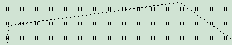 -
создаем шахматный порядок – угол поворота – 315º, расстояние – 7,071068 м, как решение теоремы Пифагора:
objects Offset into table Zaluvka angle 315 .000000 distance 7. 071068 units "m" type Cartesian Data Field1 = Field1
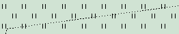 -
Смещаем к нижней границе:
objects Offset into table Zaluvka angle 270 .000000 distance 10. 0 00000 units "m" type Cartesian Data Field1 = Field1
- В дальнейшем нужно очистить от условных знаков территории за пределами участка – для этого используем инструмент выбор-В-области – нажимаем данным инструментом в пределах угодья, в результате чего выбираются только нужные знаки, копируем их в буфер;
- Выделяем все условные знаки сенокосов и удаляем их, потом вставляем из буфера обмена, предварительно скопированы знаки: 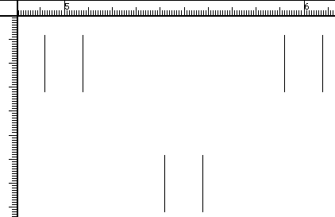